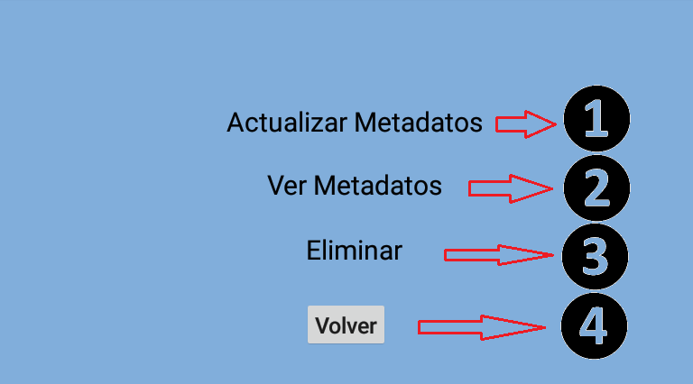
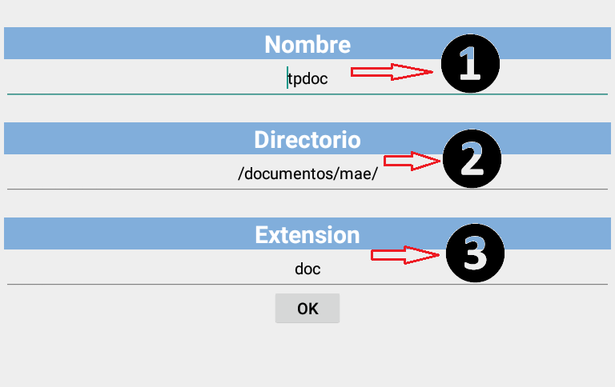

Cómo usar Udrive¶

Ver opciones del archivo¶
Para ver las opciones del archivo, seleccione el archivo, y aparecera el siguiente menu que le permitira:
1 - Actualizar los metadatos del archivo
2 - Ver los metadatos
3 - Eliminar el archivo
4 - Descargar el archivo
5 - Volver al menu anterior

Actualizar datos del archivo¶
Para para actualizar la informacion del archivo debera seleccionar actualizar metadatos, lo que le permitira:
1 - Ingresar nuevo nombre del archivo
2 - Ingresar nuevo directorio
3 - ingresar nueva extensión
